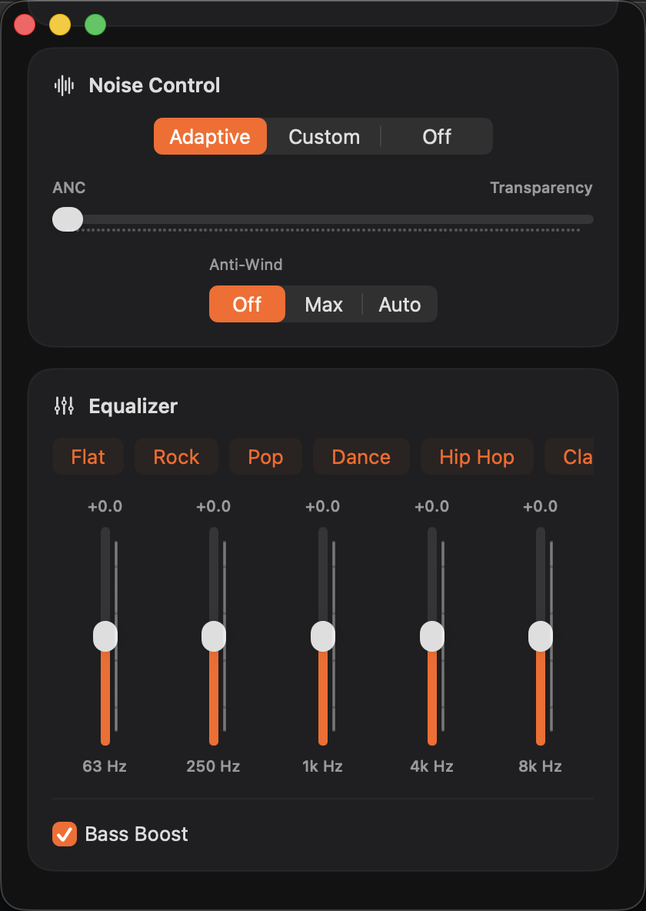

Multipoint switching
See remembered devices, check which ones are connected, and switch the second connection while keeping your Mac attached.
Open source · v0.2.2 Technical Preview
Switch multipoint devices, adjust noise control and EQ, and keep useful controls on your desktop with a WidgetKit widget.
Requires macOS 14 or later · MOMENTUM 4 only

Features
M4 Companion is a small personal project. It focuses on a few everyday MOMENTUM 4 controls rather than trying to replace the phone app.
See remembered devices, check which ones are connected, and switch the second connection while keeping your Mac attached.
Choose Adaptive, Custom, or Off. Adjust transparency and set Anti-Wind to Off, Max, or Auto.
Adjust the five-band EQ, select a preset, reset to Flat, or toggle Bass Boost.
Add a medium or large MOMENTUM 4 widget for battery, device status, and quick switching.
While the Mac app is open, settings changed from the phone app are read back from the headset.
No account, cloud backend, telemetry, or analytics. The source is available on GitHub under the MIT License.
Installation
The current build is ad-hoc signed and not notarized by Apple. macOS may ask you to confirm the first launch.
Get the latest Technical Preview from GitHub Releases.
Open the DMG and drag M4 Companion.app into Applications. Do not run it directly from the disk image.
In Applications, right-click M4 Companion and choose Open. If needed, use System Settings → Privacy & Security → Open Anyway.
Optional Terminal method
xattr -dr com.apple.quarantine "/Applications/M4 Companion.app"
Only run this after verifying that you downloaded the app from this project's GitHub Release.